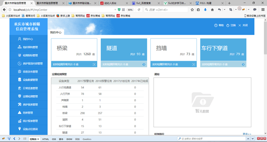

项目经验
重庆市桥隧信息管理系统
- 负责搭建前端框架,完成其中4个功能模块,每个模块均实现从前端页面到数据库的所有功能。
- SPA,前后端分离,5~6人团队,约十个大功能模块,工程化开发,每个功能模块均是一个小的MVC架构。
- 使用fis3集成框架优化代码,基于Angularjs框架处理数据,使用SVN进行版本管理。
- 服务器端使用java语言SSH框架、MYSQL数据库,实现了RestfulApi规范。
- 开发环境：Windows10+MyEclipse2014+WebStorm2016

2016.08-2016.12